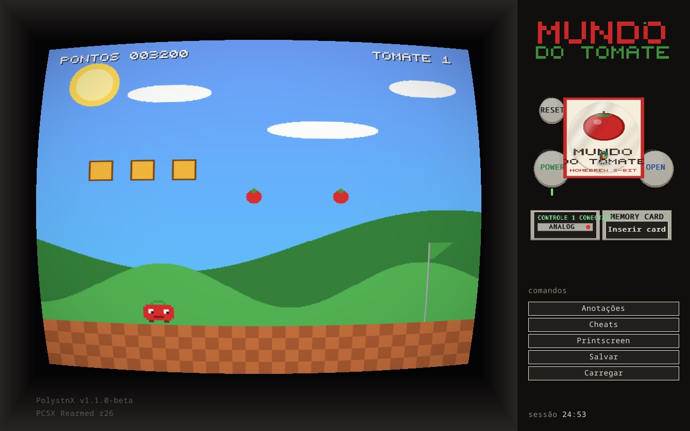
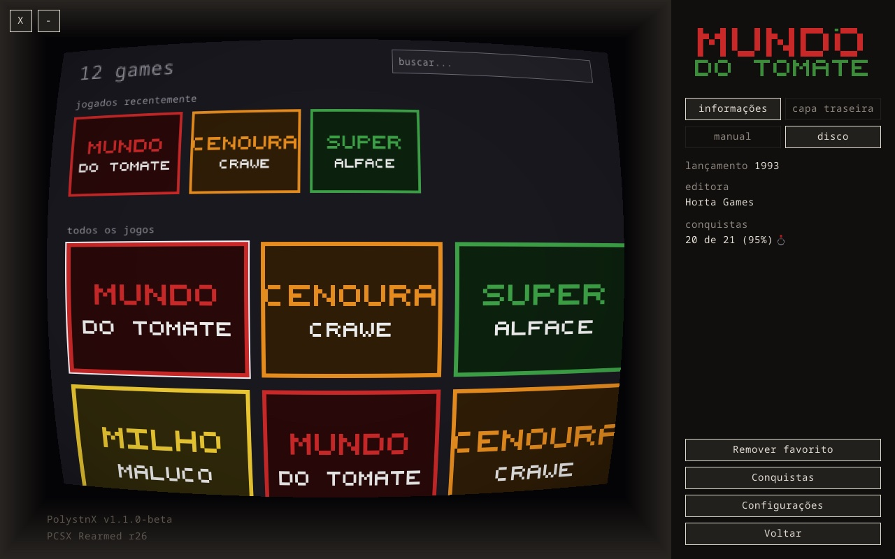
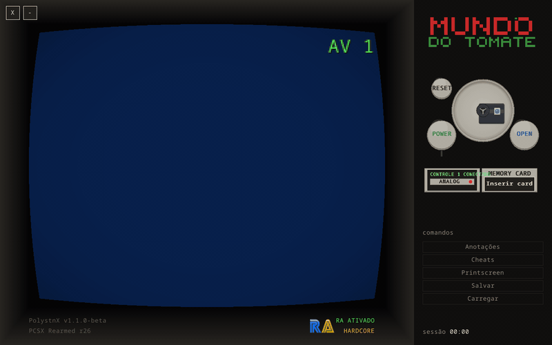
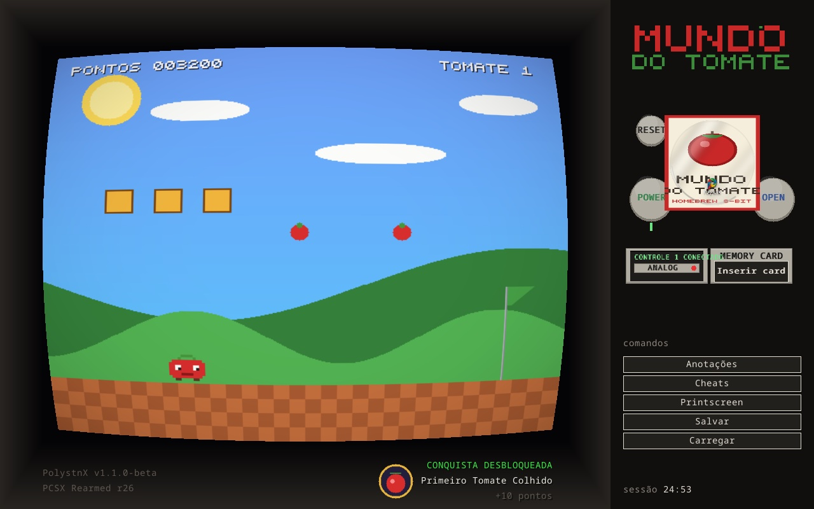

manual do proprietário
PolyStnX
Um PlayStation inteiro na sua TV — leitor de disco, memory card e DualShock de verdade — em vez de só uma janela com o jogo.
v1.1.0-beta SDL3 embutida · macOS / Windows / Linux / Steam Deck

O console
A maioria dos emuladores te dá uma janela. O PolyStnX te dá o aparelho: a tela acorda no AV 1, você escolhe o jogo na estante, o disco desce e assenta no spindle com um clique — e o console só liga quando você aperta o Power, igual ao hardware.
O tubo curva a imagem com scanlines e vinheta, e abre em tela cheia na resolução nativa do seu monitor — laptop, TV ou Steam Deck. Tudo se opera com mouse e gamepad; a única exceção é escrever uma anotação, que precisa de teclado por natureza.
E é portátil de verdade, zero nuvem: sem banco de dados e sem raspagem online — tudo em pastas ao lado do app, que você carrega onde quiser.
Como ligar
-
passo 1
Baixe o app
Última release: DMG para macOS, zip para Windows, AppImage e Flatpak para Linux — todos com a SDL3 embutida, sem instalar dependência nenhuma.
-
passo 2
Coloque seus discos
Arraste seus discos
.chdpara a pastaroms/ao lado do app — um.m3ulista os discos de um jogo multi-disco. Um botão na estante resolve o nome canônico No-Intro se você tiver o DAT. -
passo 3
Coloque a BIOS
O app não distribui BIOS (arquivo proprietário): copie a da sua própria console para a pasta
system/. É ela que dá o boot de verdade — logo, tela de memory card e tudo. -
passo 4
Instale o núcleo
Na tela inicial, o botão “Baixar núcleo” traz o PCSX Rearmed do buildbot da libretro e o mantém atualizado — a seta só acende quando existe commit novo de verdade.
| macOS | Apple silicon (arm64), macOS 12+ |
|---|---|
| Windows | x86_64, Windows 10+ |
| Linux | x86_64 — AppImage autônomo e Flatpak; Steam Deck testado |
| discos | CHD (único formato aceito); .m3u para multi-disco |
| controles | mouse + gamepad (DualShock vibra); teclado só para anotações |
A estante de jogos

A estante é a prateleira da sala: busca instantânea, faixa de favoritos, “jogados recentemente” e histórico — com tempo de jogo por jogo, contando só com o console ligado, e por sessão.
No painel do jogo, abas de informação, capa traseira e manual em PDF dentro da TV, com páginas viradas no próprio painel. Cheats curados em checklist e 15 slots de captura de tela nomeáveis moram no livro de anotações, que abre com o console pausado.
O disco e o memory card

Escolher um jogo insere o disco de verdade: animação de descida, assento no spindle — e o som do leitor toca quando o jogo carrega, deduzido do conteúdo na tela. No desligar, o disco segue girando pela inércia, como no aparelho.
Jogo multi-disco troca de disco na sessão,
pelo bloco “Discos” da pausa — a lista do
.m3u, sem passar pela estante. Ejetar abre a
tampa; com o console desligado, a BIOS dá o boot pelo disco
ejetado, igual ao aparelho.
O memory card é decisão do jogador: os slots
nascem vazios a cada jogo — inserir é manual, pelo modal no
painel, e o card encaixado mostra o adesivo com o nome e os
gestos Trocar/Ejetar no plástico. Os saves vivem em
.mcr ao lado do app, e acompanham o jogo na
renomeação.
Conquistas na TV

Integração completa com o RetroAchievements: login nas configurações, identificação do jogo pelo hash do disco e avaliação das condições em tempo real contra a RAM do núcleo — hardcore ou softcore, badge fixo no queixo da TV, progresso “X de Y (Z%)” no painel da estante, lista dentro da TV e medalha de quem zerou: dourada para 100%, prateada para quem chegou ao fim.
Especificações
| núcleo | PCSX Rearmed (port libretro) — baixado e atualizado pelo app |
|---|---|
| vídeo | filtro NTSC RF do blargg, scanlines, tela cheia na resolução nativa do monitor |
| áudio | 48 kHz estéreo, com o som do leitor deduzido do conteúdo |
| vibração | DualShock no gamepad — a interface de rumble do libretro, drenada a cada quadro |
| código | Rust sobre SDL3, em seis camadas de crates: apresentação, domínio, emulação, plataforma, RA e NTSC |
| pacotes | DMG / zip / AppImage / Flatpak com SDL3 embutida, gerados a cada release |
| dados | 100% locais — sem banco de dados, sem nuvem, sem telemetria |
Avisos & licenças
aviso importante
Nenhum jogo comercial aparece neste site e nenhuma ROM, BIOS ou núcleo é distribuído com o app: seus discos são seus, a BIOS é o arquivo da sua própria console, e o núcleo PCSX Rearmed é baixado direto do buildbot oficial da libretro.
sobre as telas de jogo
As imagens mostram o Mundo do Tomate, um
homebrew fictício desenhado pixel a pixel em código, dentro do
próprio app, só para estas fotos — o gerador vive no
repositório como o exemplo site_screens_mock.
Nenhum jogo comercial à vista, de propósito.
licenças
PolyStnX é um projeto pessoal, sem fins comerciais, sob licença MIT. O PCSX Rearmed tem licença própria (GPL) — é por isso que o núcleo nunca vem no pacote. Terceiros listados em THIRD-PARTY-NOTICES.md. RetroAchievements é um serviço de terceiros e precisa de conta própria.